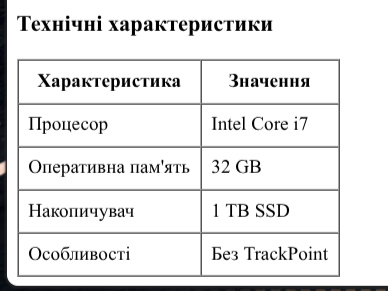
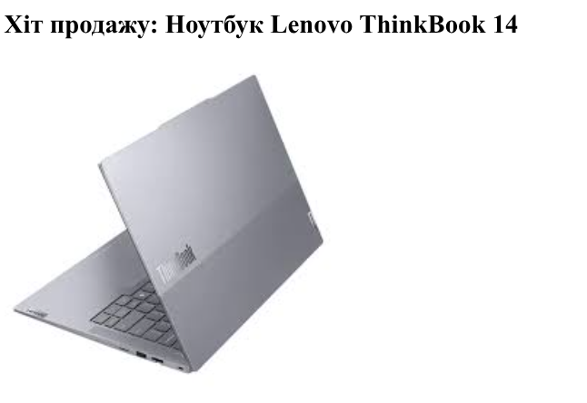
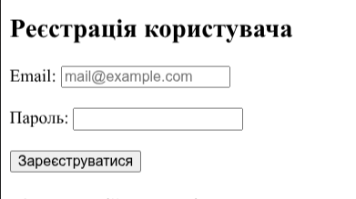
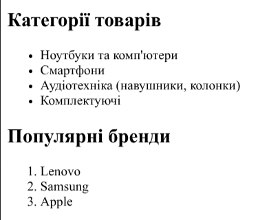

Місце виведення інформації
Тема, Мета, Місце розташування
Тема: ТЕГИ ТА АТРИБУТИ HTML-ДОКУМЕНТА. СТРУКТУРНА РОЗМІТКА. GIT.GITHUB. РОБОТА З РЕПОЗИТОРІЯМИ.
Мета: придбати практичні навички роботи з GitHub, репозиторіями, HTML-документом, таблицями, зображеннями, посиланнями, списками, формами.
Опис предметного середовища. Опис бізнес-логіки
Дані винесені на окрему сторінку `logic.html` у головному застосунку. Застосунок є каталогом аніме, що дозволяє шукати та переглядати тайтли за допомогою списків та форм.
Структура документа
Головна сторінка WEB-застосунку містить семантичну структуру HTML5. Використано теги заголовків <h1>-<h2>, форми <form> для пошуку, списки <ul>, <ol> для відображення жанрів, таблицю <table> для рейтингів та тег <img> для постера.
HTML-код ТАБЛИЦІ

<table border="1" cellpadding="5" cellspacing="0">
<tr>
<th>Назва</th>
<th>Студія</th>
<th>Рейтинг</th>
</tr>
<tr>
<td>Code Geass</td>
<td>Sunrise</td>
<td>8.7</td>
</tr>
</table>Теорія:
Тег <table> є контейнером для таблиці. <tr> створює рядок, <th> визначає заголовок стовпця (текст у ньому жирний та вирівняний по центру), а <td> використовується для звичайних комірок з даними.
HTML-код ЗОБРАЖЕННЯ

<img src="link.png" alt="Постер" width="250">Теорія:
Тег <img> не потребує закриваючого тегу. Атрибут src вказує шлях до файлу, alt містить альтернативний текст (якщо зображення не завантажиться), а width та height задають розміри.
HTML-код ФОРМИ

<form action="#" method="GET">
<label for="search">Назва:</label>
<input type="text" id="search" name="search">
<button type="submit">Шукати</button>
</form>HTML-код СПИСКІВ

<ul>
<li>Елемент 1</li>
</ul>Теорія:
Тег <ul> створює маркірований список, а <ol> — нумерований. Елементи обох типів списків створюються за допомогою тегу <li>.
Висновки
Під час виконання лабораторної роботи було набуто практичних навичок створення базової структури HTML-документа, роботи з тегами таблиць, списків, форм та зображень. Було успішно налаштовано середовище розробки, створено локальні та віддалені репозиторії на базі Git/GitHub, а також налаштовано хостинг статичних сторінок за допомогою GitHub Pages.